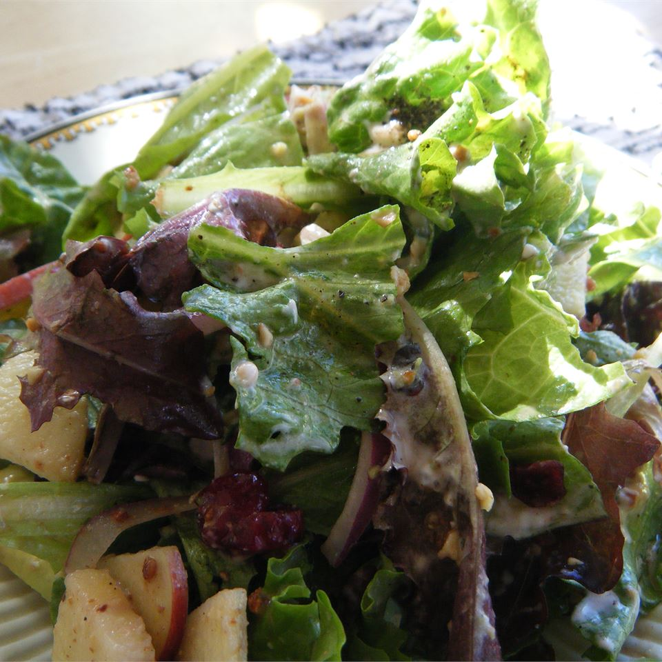

Cornucopia Salad

Description
Delicious salad that tastes like the III Forks salad (if you live in the Dallas area). It's an excellent salad that everyone will love, and it's very easy to make!
Ingredients
- 1/4 cup sliced almonds
- 1 tablespoon white sugar
- 1 head red leaf lettuce, torn
- 3 green onions, chopped
- 1 Granny Smith apple, cored and chopped
- 1 avocado - peeled, pitted and chopped
- 1/2 cup dried cranberries
- 1/4 cup crumbled blue cheese
- 2 tablespoons red wine vinegar
- 2 teaspoons white sugar
- salt and pepper tot taste
- 1/4 cup vegetable oil
Steps
- Place the almonds and 1 tablespoon of sugar in a small skillet over medium-low heat, and cook and stir until the sugar melts and the almonds brown, watching carefully to avoid burning. Remove from heat and allow to cool.
- In a large salad bowl, mix the lettuce, green onions, apple, avocado, dried cranberries, blue cheese, and cooked almonds.
- Whisk together the vinegar, 2 teaspoons of sugar, and salt and pepper in a bowl, and stir in the vegetable oil. Pour the dressing over the salad, and gently toss to combine.